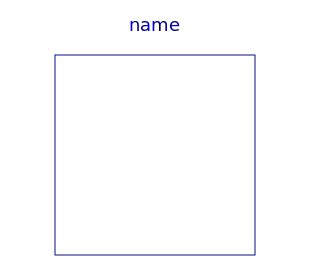
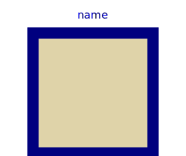
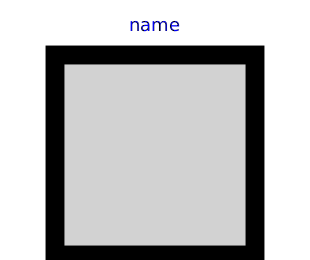

Icons for Blocks
| Name | Description |
|---|---|
|  Block | Basic graphical layout of input/output block |
| Basic graphical layout of Boolean block | |
|  DiscreteBlock | Graphical layout of discrete block component icon |
| Basic graphical layout of Integer block | |
|  PartialBooleanBlock | Basic graphical layout of logical block |